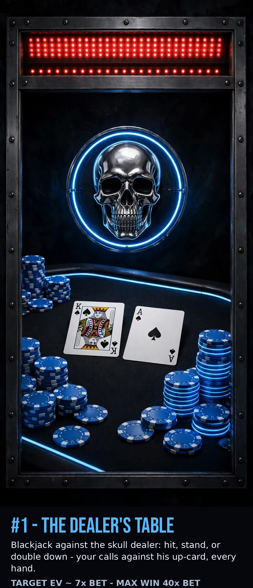
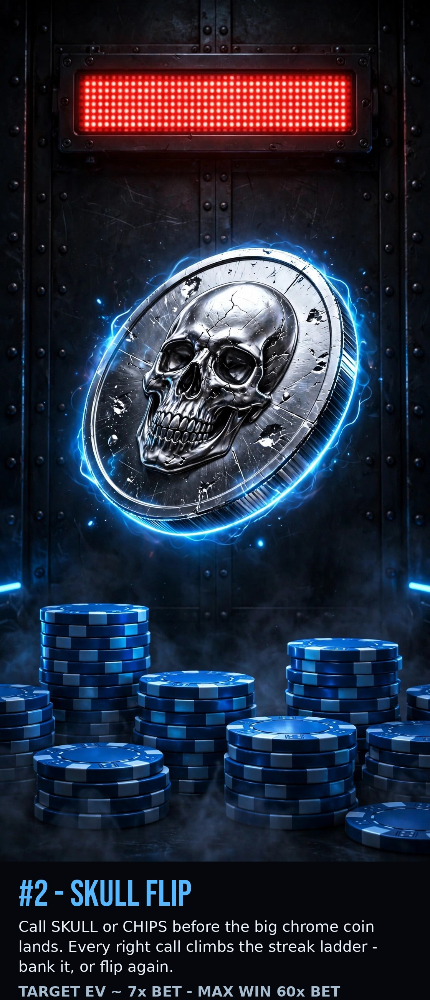
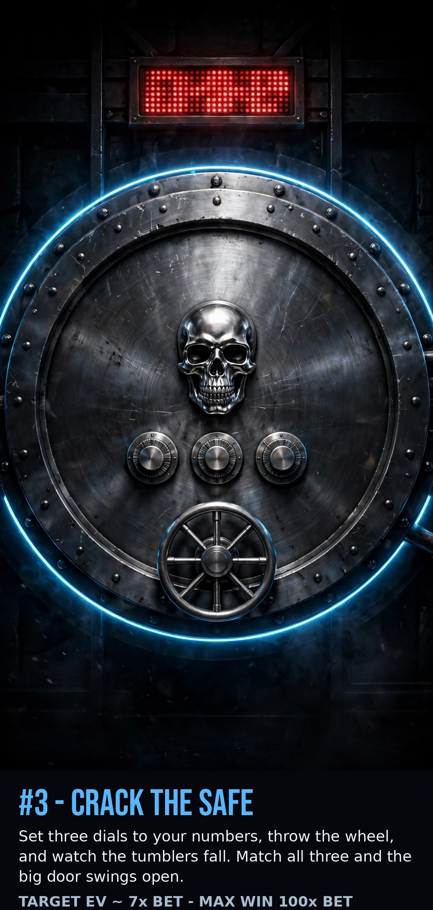
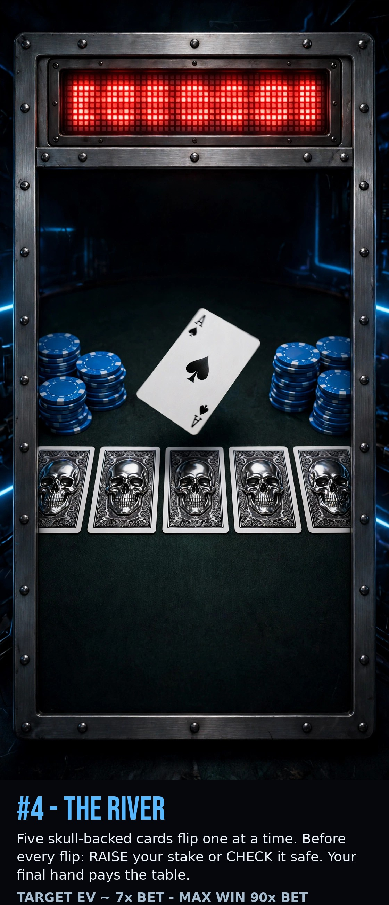
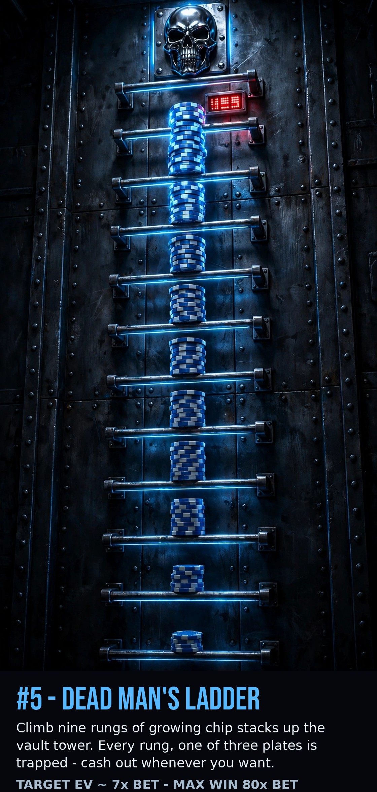

Poker Luxe has a dead bonus seat: hit five of a kind and the machine throws the full BONUS celebration — the video, the big BONUS title — and then nothing opens. No game, no bonus pay. These five games are built to fill that seat. Pick one by number.

YOUR MOVES Blackjack against the house — and the house dealer is the chrome skull. You are dealt two cards against his one up-card. Every hand is your calls: HIT for another card, STAND and hold, or DOUBLE — one card only, and your prize doubles with it. The dealer then plays out his hand to 17.
HOW IT ENDS Beat the dealer and the posted ladder pays; a dealer bust pays bigger; a natural blackjack — 21 on the deal — pays the top. Win two hands straight and the HOT SHOE adds +5× for every win after.
THE FEEL A real blackjack hand with real decisions, face to face with the skull.
TRIGGER $$$ random bonus pool.
NATURAL BLACKJACK 25× · TARGET EV ≈ 7× BET · MAX WIN 40× BET

YOUR MOVES The big chrome coin spins — skull on one face, a chip stack on the other. Before it lands you call it: SKULL or CHIPS. Call it right and your streak climbs the ladder: 2× → 4× → 7× → 12× → 20× → 35× → 60×. After any flip you can BANK the streak and walk.
HOW IT ENDS One wrong call and the streak is gone — the coin keeps whatever it climbed to. Seven straight calls takes the top of the ladder.
THE FEEL The purest nerve game on the machine: one call, one coin, your gut against the flip.
TRIGGER $$$ random bonus pool.
STREAK LADDER TOPS AT 60× · TARGET EV ≈ 7× BET · MAX WIN 60× BET

YOUR MOVES The big vault door hides a three-number combination. Set each of the three dials to your number, 1 to 9 — your read, your numbers. Then throw the wheel handle and the tumblers spin down onto the true combination, one dial at a time.
HOW IT ENDS Match one dial: 3×. Match two: 15× — and if exactly one dial misses, you earn one LAST TURN: re-pick that dial for a second shot. Match all three and the door swings open on 100×.
THE FEEL A safecracker's slow heartbeat — three tumblers, three chances to be right.
TRIGGER $$$ random bonus pool.
ALL THREE DIALS 100× · TARGET EV ≈ 7× BET · MAX WIN 100× BET

YOUR MOVES Five skull-backed cards lie face down on the felt. They flip one at a time — and before every flip you make the call: RAISE, and your stake climbs the ladder (×1 → ×2 → ×4 → ×8 → ×16), or CHECK, and it stays where it is. Five flips, five decisions, each one with more of the hand showing.
HOW IT ENDS After the fifth card your hand is scored on the posted table — pair 1× up to a straight flush 90× — and paid on the stake you built. Raise early on a hunch or late on a sure thing: the stake is yours to time.
THE FEEL Reading a hand as it builds and betting your nerve on what is still face down.
TRIGGER $$$ random bonus pool.
STRAIGHT FLUSH 90× · TARGET EV ≈ 7× BET · MAX WIN 90× BET

YOUR MOVES Nine rungs climb the vault tower, each holding a bigger stack of blue chips (1×, 1×, 2×, 3×, 5×, 8×, 12×, 18×, 30×). Every rung shows three steel plates — pick one to step on. Two hold and the rung's chips stack into your total. After any rung you can CASH OUT and climb down with everything.
HOW IT ENDS Step on the trapped plate and you fall — but rungs 3 and 6 are LOCKED: reach one and its total is guaranteed, and a fall only drops you back to it. Clear all nine and the whole tower is yours.
THE FEEL A climb where every step is a guess with your winnings under your feet.
TRIGGER $$$ random bonus pool.
FULL CLIMB 80× · TARGET EV ≈ 7× BET · MAX WIN 80× BET
Examples only — nothing is wired into the game yet. Pick a number and that game gets built into Poker Luxe's bonus pool.
© 2026 J-Dawgs Industries